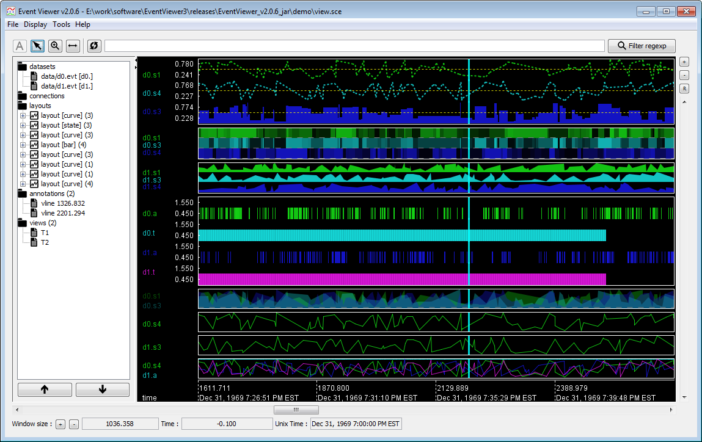

Event Viewer | Beginner guide
Overview
Event Viewer is powerful visualizing tool for time series, time sequences and other symbolic or scalar temporal datasets. Event Viewer has a lot of unique features which allow for a powerful understanding of data. Event Viewer can also be used to study static data and real time data flows. Finally, Event Viewer can interact seamlessly with Honey and allow quick prototyping analysis.

Some of Event Viewer's notable features are:
- Display symbolic and numerical multivariate time sequences and time series.
- Fully customizable display (drawing type, colors, styles, legend, etc.)
- Efficient navigation (camera moving and zooming).
- Handle huge dataset with massive number of records and/or dimensions.
- Support Titarl CSV, EVT and BIN files. With the help of Honey script, Event Viewer can load any CSV file.
- Can load "directories" (i.e. load each file of a directory.)
- Allow visualization of real-time data flow.
- Export plot in SVG and PNG formats.
- Placement of annotations.
- Support "anchors" to save the temporal location of interesting phenomena.
- Can export video simulating real time data flow.
Getting Event Viewer
Event Viewer is available on the download page.
On Window, Event Viewer can be configured to automatically open CSV and SCE (event viewer configuration file) by answering the "Open With" question with the "EventViewer.bat" file.
An examples of Event Viewer plot is available in the "demo" directory.
Next, we invite you to read the Event Viewer's tutorial.
Need help?
In case of questions or problems, contact me at .